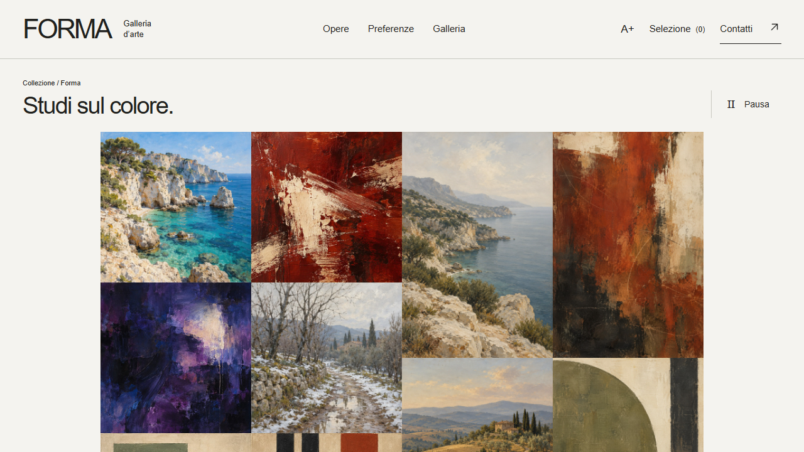

La proposta per la tua galleria

Prima, esplora FORMAIl fac simile del sito: stile e navigazione da provare.Apri il sito ↗ Inizia a comporre il preventivo ↓Passaggio 1
Quale sito ti serve?
Confronta i vantaggi. Apri un’offerta per vedere il prezzo e sceglierla.
Passaggio 2 · Facoltativo
Gli strumenti per lavorare meglio.
Prezzi e funzioni a confronto. Scegli un sito per attivare gli strumenti compatibili.
Il pannello è la base. Gestionale e Digital Cards sono le sue estensioni.
Continua al riepilogo →Passaggio 3
Il tuo preventivo.
Puoi cambiare sito e strumenti in qualsiasi momento.
Totale indicativo
Salva la configurazione per parlarne insieme.
Il riepilogo non conferma un ordine.
Dettagli prima di iniziare
Perimetro, materiali e condizioni: consulta solo ciò che ti serve.